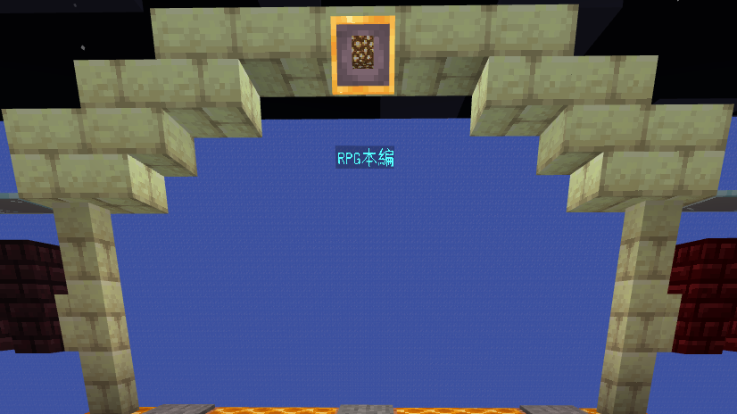

1.降臨

サーバーに参加する際はリソースを入れましょう。敵モブが見えないなどプレイに支障が生じます。
サーバーに入るときゃわいいキツネさんがいて、とびかかってきます。決して攻撃ではありません。歓迎です＾＾
挨拶をしたら目の前あるボタンを押してルールを読みに行きましょう。ルールを読んだらようやく正式ログインです！！
2.職業選択

正式ログインしたらまずは職業を設定しましょう。職業はなくてもいいですがかなり不利になります＾＾
職業は大きく分けて[下級職業, 中級職業, 上級職業]があり、下級職業は初期状態から就くことができて
中級職業及び上級職業はある条件を満たすと就けるようになります。
下級職業と中級職業と上級職業はそれぞれ就くことが可能なのでフリーライター状態です。
他にも超上級職業と最高上級職業がありますがネタ職業なので鯖民には関係ありません＾＾
3.チュートリアル

職業に就いたらいよいよ本編です。そう思ってないですか???
チュートリアルをクリアしないと始まりませんね＾＾
その前にuiの確認をしましょう!!
右上に敵の体力バーがあります。最大5体分表示されます。
防具・体力・空腹バーと手持ちアイテムはいつも通り表示されます。
MPバーはいずれ使います。 「これの表示のためにコマンドブロックを100個積み増した＾＾『いやFunctionつかえや!!』」
チュートリアルはほぼ何も教えてくれません。ただゾンビを八つ裂きにするだけです！！
一度チュートリアルクリアしたら原則もうチュートリアルは受けられません
4.RPG本編
ここから先は自分の目で確かめましょう!!他に知りたいことがあったらQ&Aを参照したり、
Discordの質問チャンネルで質問したりサーバーで鯖主や運営、鯖民に聞いてみてもいいですね＾＾
さぁ冒険を始めよう( ^ω^)